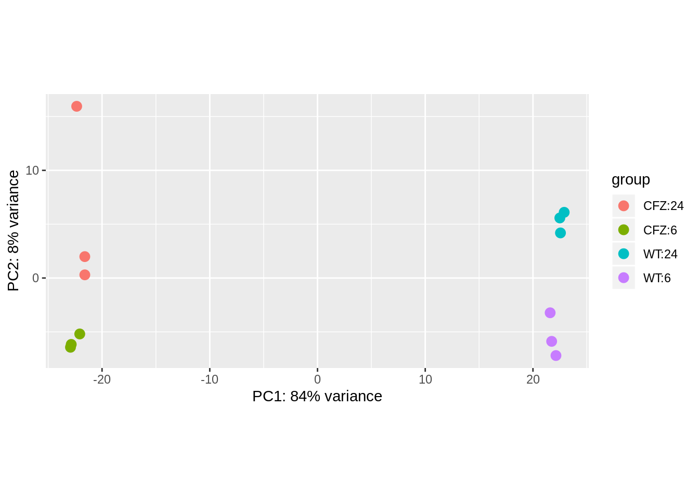

Carfilzomib resistance
AMO-1 (WT) vs AMO-CFZ cells treated with DMSO
Exploring differences between cells treated with control. In theory the differences are due to carfilzomib resistance of the cells, gene differential expression might elucidate what is involved in CFZ resistance. But also stored separately since April so could be differences now due to other factors.
PCA plot
Separated by cell type and time points. 
Heat plot
Large sample distance between CFZ resistant cells and WT cells. Within those groups, separation between 6 hours and 24 hours. Outlier in CFZ t24 group, but still closer to CFZ cells than WT.
Check CFZ vs WT 6hr against 24 hr
10561 of 12212 genes are under threshold (86%), i.e gene expression does not increase/decrease by over two-fold (double/halve) from WT to CFZ. 611 genes increase expression, over threshold (more than double), 1040 genes decrease expression, over threshold (more than halve), 37% and 63% respectively. Additionally the most underexpressed genes have a much larger fold change than the most overexpressed genes.
5539 genes were differentially expressed (padj <0.05) for 6 hr time points. 722 overexpressed (padj <0.05 and log fc > 1), 1323 underexpressed (padj <0.05 and log fc < -1).
XGR pathway analysis
6 hour
24 hour
Compare
Time points as batches
REACTOME

Molecular signatures REACTOME
Molecular signatures KEGG
Sub-network
Maximum scoring subnetwork using dnet package. Finds using minimum spanning tree method. Specified top scoring 50 genes, then fine tunes p-threshold iteratively. 6 replicates used with model including time point as batch variable.
Transcription factors
Loads of them so no venn diagram Intersection of TFs from 6hr CFZ vs WT and 24 hr CFZ vs WT differentially expressed genes (padj < 0.05 and abs(log fc) >= 1)
Upregulated transcription factors:
## [1] "GLIS3, CTDSPL, L3MBTL4, WNT5A, CEBPA, LHX2, TBX2, MYCN, ZNF583, ZNF558, CRY1, ADRB2, FOXJ1, AMOT, PRDM5, RUNX1T1, TEAD4, GTF2IRD2, SEC14L2, JUP, ZNF841, ZNF254, RBFOX2, SALL2, CAND2, MAML2, HABP4, ZNF518B, BATF2, FHL1, ANKRD30A, GTF2H2, DEPTOR, POU3F2, NFIB, ZNF302, KIAA0040, SATB2, NR2F1, ZNF358, ZNF300, TRIM47, NPAS3, HES6, MNX1, ETS1, ZNF132, SIX2, LMO3, DIP2C, XBP1, SCML2, WT1, GTF2IRD2B, MAFB, GLI1, RGS14, NACC2, ESRRB, SSH3, SOX2, SOX11, ONECUT2, WWTR1, HTATIP2, BTBD3, ARID5B, ZNF512B, DMRTA1, BCL11A, SOWAHC, TEAD1, PER3, ZNF736, HMX2, ZEB2, PCBD2, RAPGEF5, NFIC, BOLA1, MFSD3, SHOX2, ENC1, SREBF1, DMTF1, ZNF219, GTF2IRD1, TLE4, KLF11, ZNF251, EME2"Downregulated transcription factors:
## [1] "KLHL6, CERS6, CDKN1A, SSX2, ZBTB32, PREX1, ZNF160, SOHLH1, SEMA4A, APBB1, RIN3, SP140, PLEK, TP63, ZNF83, FOXP1, TRIP6, CBFA2T3, ZNF175, GAS7, MEIS1, PITX1, MYB, MYEF2, SP140L, RNF144A, IQSEC3, ZNF608, IL16, CRIP1, ZNF362, RORA, ZNF532, CUX2, MACC1, ZHX2, NFATC4, TRIM22, HIC1, MDM2, CIITA, ZNF600, CREB3L4, ZNF320, EYA1, MSC, ZNF516, TCEAL8, HOXD4, ZNF71, PKHD1, BATF3, IRF1, BATF, NCALD, RORB, ZBED3, ZNF93, ZNF737, ERI2, SOHLH2, ZYX, ZNF611, CORO1A, NKX2-5, ARHGEF25, RGCC, STAT1, NFATC1, ZNF695, RAG1, ZNF391, DDB2, PLAGL1, SOX5, POU2AF1, ZNF804A, AFF2, GADD45A, NEUROG2, ERBB2, HHEX, BRIP1, GFI1B, NKD2, ELF3, KLF2, AHRR, KDM5B, ZFHX3, VDR, HOXC6, ZNF287, ARNT, TOX2, ZNF354B, AKNA, EYA4, PRDM15, IFI16, MBNL1, MED10, IFT57, ZNF253, RNF125, BHLHE41, RPS6KA5, HEY1, BLM, STAT5A, ZDHHC11, TCEA2, PCNA, LITAF, HLA-DQB1, SP110, LHX3, SYNE1, ARNTL, RGS9, ZNF292, ESR2, TAF4B, PNRC1, HOXB4, CIR1, TNFAIP3, ZNF682, HMGB1, CDCA7, MIS18BP1, CXXC1, ZNF816, SETDB1, DDIT3, ZMAT3, TBPL1, HMGB2, EAF2, BHLHE40, ID3, ZFP36L2, LPP, ETV5, NFATC2, NFE2L2, ETV6, TRIM9, DAZAP2, MXD1, ATF3, ELF1, CCNE1, KDM3A, SMARCD2, NFXL1, TFB1M, YAF2, HMGN2, ZUFSP, ASB8, GTF3C3, CAND1, CALCOCO1, IRF2, MBD1, ING1"